Освоить на практике механизм динамического назначения IP-адресов
через протокол DHCP (Dynamic Host Configuration Protocol) в локальной
вычислительной сети, а также получить навыки настройки DNS-сервера и его
взаимодействия с DHCP.
Построение топологии сети
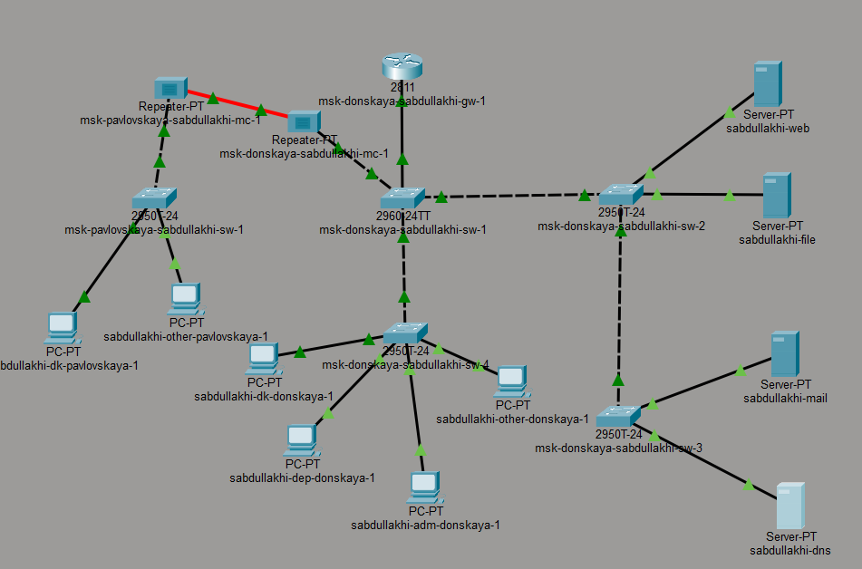
Топология сети
Настройка IP-адреса
на DNS-сервере вручную
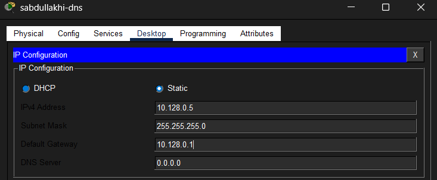
Настройка IP-адреса
DNS-сервера
Настройка DNS-службы на
сервере
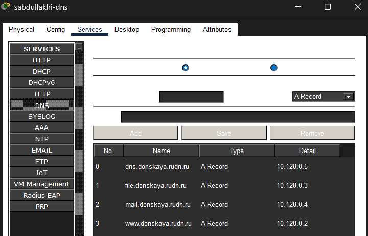
Настройка IP-адреса
DNS-сервера
Настройка DHCP на
маршрутизаторе
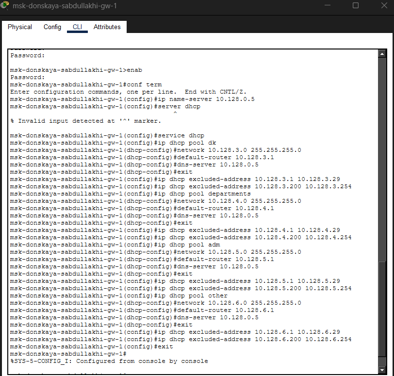
Настройка DHCP на
маршрутизаторе
Получение IP-адресов
клиентами по DHCP
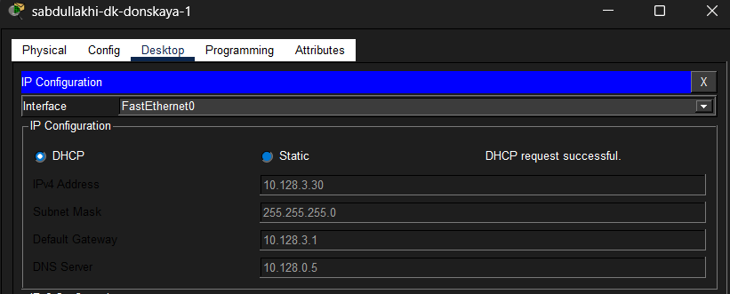
Получение IP-адресов клиентами по
DHCP
Проверка сетевой
доступности (связности)
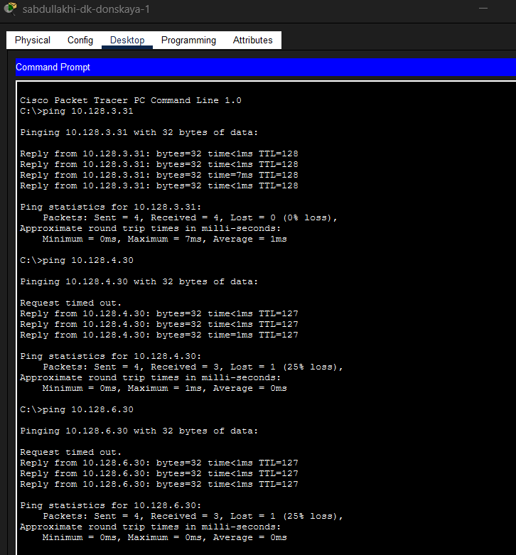
Проверка сетевой доступности
Просмотр
информации о пулах DHCP на маршрутизаторе
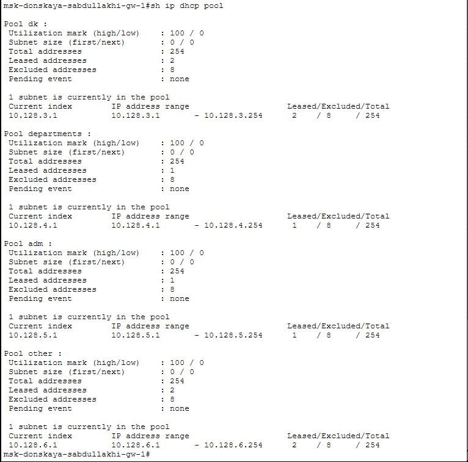
Информация о пулах DHCP
Просмотр
информации о пулах DHCP на маршрутизаторе
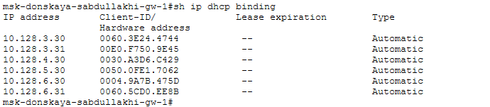
Таблица выданных
DHCP-адресов
Анализ
процесса обмена DHCP-сообщениями в режиме симуляции
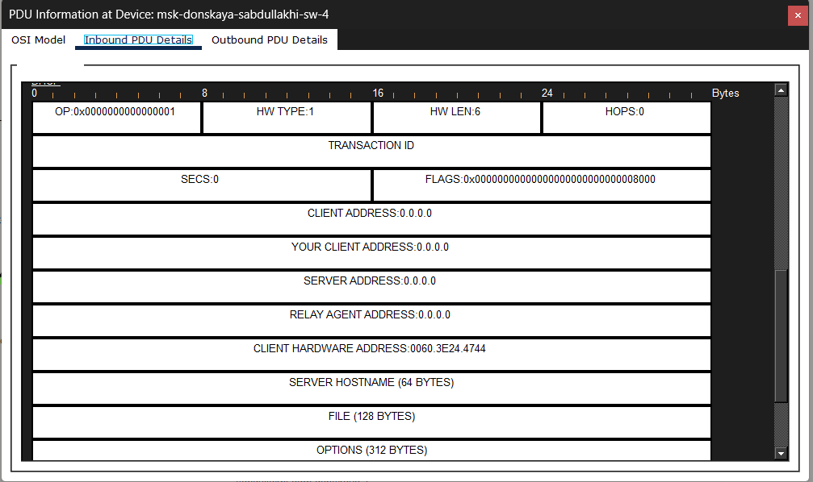
DHCP Discover — исходное сообщение
клиента
DHCP Offer
HCP Offer — предложение
IP-адреса
DHCP Request
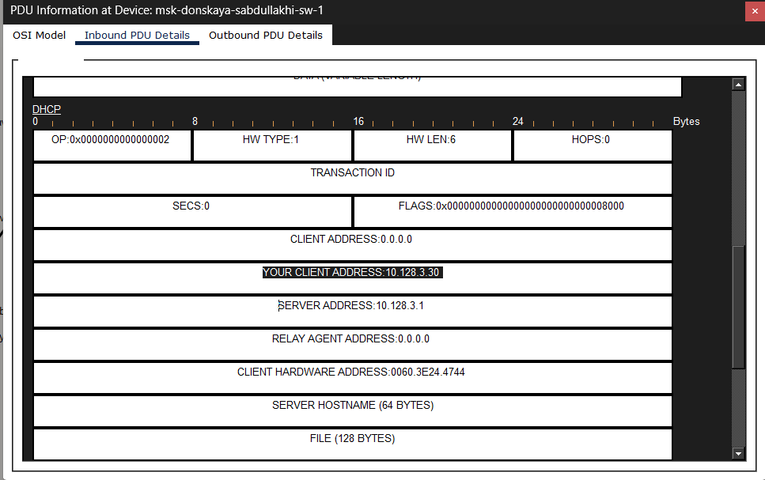
HCP Request — подтверждение выбора
адреса
DHCP Acknowledgment (ACK)
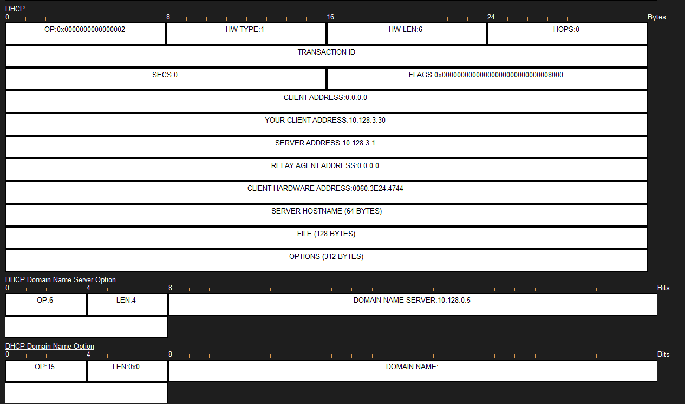
DHCP ACK — подтверждение выдачи
адреса
Процесс
обмена DHCP-сообщениями в режиме симуляции
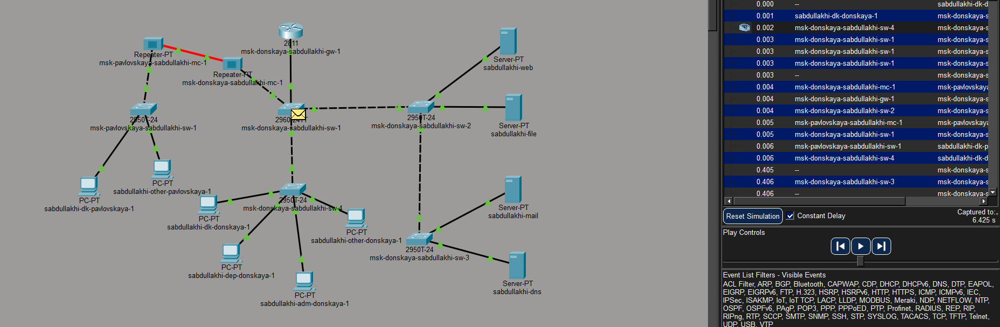
Процесс обмена DHCP-сообщениями в режиме
симуляции
Вывод
В ходе лабораторной работы был настроен DNS-сервер и созданы A-записи
для четырёх доменных имён. На маршрутизаторе настроен DHCP-сервис с
четырьмя пулами адресов для разных подсетей, клиенты успешно получили
сетевые параметры автоматически. Проверка связности подтвердила
корректную работу маршрутизации, а в режиме симуляции изучен полный
процесс обмена DHCP-сообщениями (Discover, Offer, Request, ACK). Цель
работы достигнута.